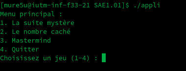
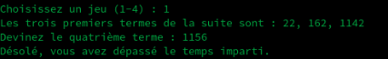
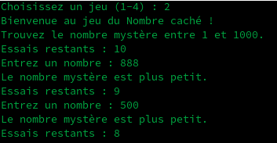
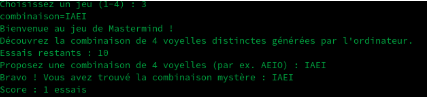

Développement d'un programme en C proposant trois jeux interactifs via un menu en ligne de commande — Suite Mystère, Nombre Caché et Mastermind. Premier projet de programmation from scratch.
Ce projet marque mes premiers pas en programmation. En 1ère année de BUT Informatique, l'objectif était de développer un programme complet en langage C proposant plusieurs jeux interactifs en ligne de commande.
Le programme présente un menu interactif permettant de choisir entre trois jeux, et continue de fonctionner jusqu'à ce que l'utilisateur choisisse de quitter. Chaque jeu met en œuvre des concepts fondamentaux : algorithmes, boucles, conditions, gestion du temps et aléatoire.
J'ai notamment rencontré des difficultés avec le Mastermind, nécessitant une compréhension approfondie du jeu et de son implémentation. J'ai consulté des ressources externes pour progresser — une démarche d'apprentissage autonome que j'assume pleinement.

Le programme démarre sur un menu interactif proposant les trois jeux plus une option pour quitter. La boucle principale maintient le programme actif jusqu'à ce que l'utilisateur choisisse explicitement de sortir — implémentée avec une boucle do...while et un switch en C.

Le programme génère aléatoirement trois termes d'une suite mathématique. L'utilisateur doit deviner le quatrième terme dans un délai de 30 secondes. La gestion du temps en C impose l'utilisation de time() et clock() — un défi technique pour un premier projet.

L'utilisateur doit deviner un nombre mystère entre 1 et 1000 en 10 tentatives maximum. À chaque essai, le programme indique si le nombre mystère est plus grand ou plus petit. Implémente une stratégie de recherche dichotomique guidée par les indices.

Le jeu le plus complexe : le programme génère une combinaison de 4 voyelles que l'utilisateur doit retrouver en 10 essais. À chaque tentative, le programme indique les bonnes lettres bien placées. J'ai dû consulter des ressources externes pour implémenter la logique de comparaison — une démarche d'apprentissage assumée.